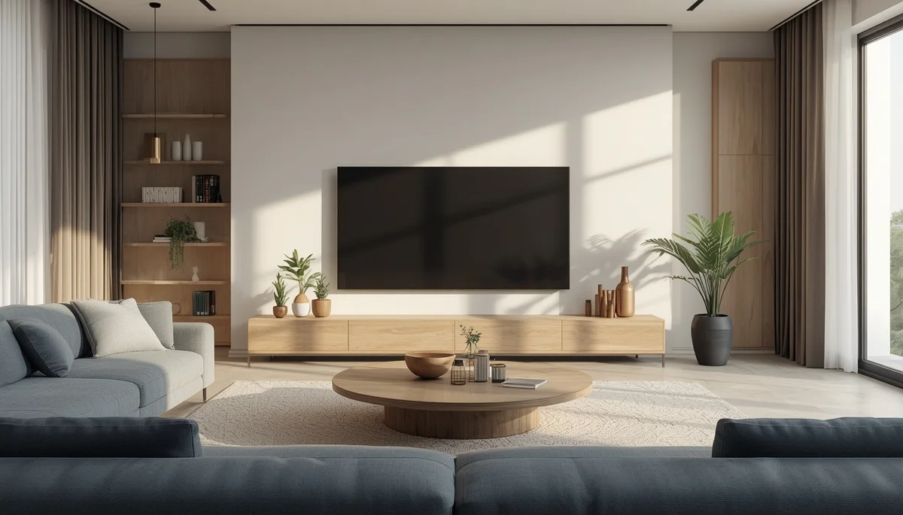
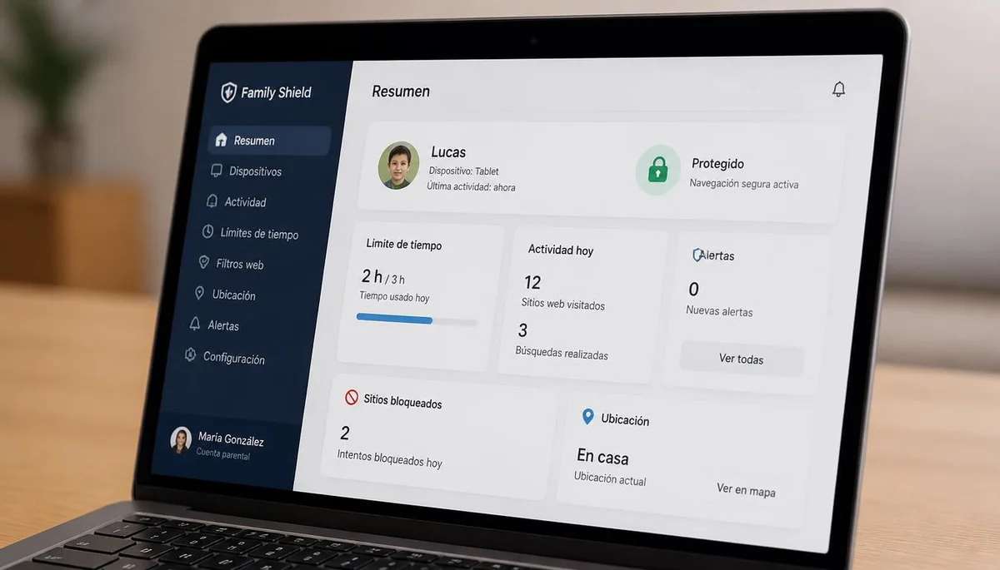

Uso responsable de pantallas y dependencia digital
Gestionar la exposición a dispositivos tecnológicos en la infancia y prevenir la dependencia digital exige pautas claras y un acompañamiento familiar consciente. Esta guía ofrece estrategias prácticas para regular tiempos, proteger el descanso y fomentar el equilibrio entre el mundo digital y la vida real.

Impacto cognitivo y neurológico de las pantallas
Cómo afecta la sobreexposición digital al cerebro en desarrollo, la atención sostenida y la capacidad de concentración.

Recomendaciones de uso y control de tiempos
Pautas claras adaptadas a cada etapa evolutiva para establecer un consumo saludable y evitar el uso descontrolado.
Higiene del sueño y desconexión antes de dormir
Por qué la luz azul y el consumo nocturno interfieren con el descanso profundo y la producción de melatonina.
Fomento del juego libre y alternativas analógicas
Recursos y propuestas de entretenimiento al aire libre para reconectar con la creatividad y el aburrimiento constructivo.

Identificación precoz de la dependencia digital
Indicadores de alerta ante el uso compulsivo, la irritabilidad por retirada de dispositivos y el aislamiento social.

El impacto del ejemplo familiar y la hiperconectividad
Cómo influye el uso que los adultos hacen del móvil delante de los menores y la importancia de la presencia consciente.

Herramientas de control parental y navegación segura
Estrategias de mediación, filtros de contenido y pautas para acompañar los primeros pasos en el entorno digital.

Pactar normas de uso y convivencia digital en casa
Cómo consensuar límites familiares razonables que fomenten la responsabilidad y la autonomía digital progresiva.
🌊 Continúa profundizando en el bienestar digital y familiar
Para complementar el uso responsable de pantallas y potenciar la desconexión saludable en el hogar, te sugerimos explorar estos recursos:
- 🎙️ Escucha el podcast: Límites digitales y alternativas al aburrimiento infantil (Ep. 15)
- 📥 Descarga el recurso práctico: Plan familiar de uso de pantallas y contratos digitales (PDF)